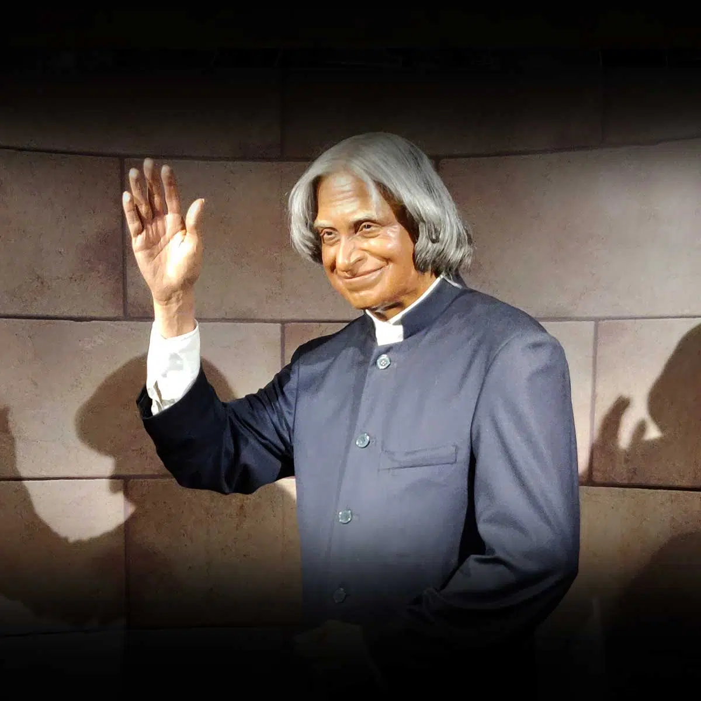

A.P.J. Abdul Kalam, in full Avul Pakir Jainulabdeen Abdul Kalam.
He was born on October 15, 1931, Rameswaram, India—died July 27, 2015, Shillong.He was an Indian scientist and politician who played a leading role in the development of India’s missile and nuclear weapons programs. He was the 11th president of India from 2002 to 2007.He spent the next four decades as a scientist and science administrator, mainly at the Defence Research and Development Organisation (DRDO) and Indian Space Research Organisation (ISRO).He thus came to be known as the "Missile Man of India" for his work on the development of ballistic missile and launch vehicle technology.
Kalam was elected as the 11th president of India in 2002 with the support of both the ruling Bharatiya Janata Party and the then-opposition Indian National Congress. Widely referred to as the "People's President",[6] he returned to his civilian life of education, writing and public service after a single term. He was a recipient of several prestigious awards, including the Bharat Ratna, India's highest civilian honour.
While delivering a lecture at the Indian Institute of Management Shillong, Kalam collapsed and died from an apparent cardiac arrest on 27 July 2015, aged 83.[7] Thousands, including national-level dignitaries, attended the funeral ceremony held in his hometown of Rameswaram, where he was buried with full state honours.
Writings
Awards
Honours